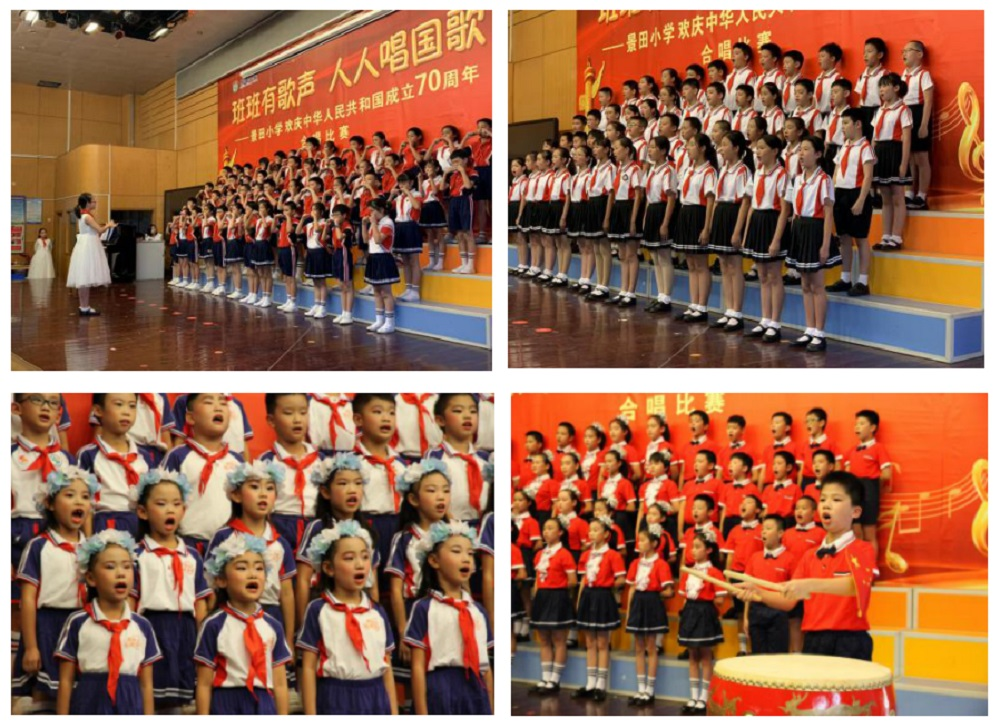

——蒲城县北关小学-蒲城县桥山中学献礼中华人民共和国成立70周年系列活动
秋高气爽，丹桂飘香。近日，蒲城县北关小学-蒲城县桥山中学全体师生举行了一系列庆祝活动献礼中华人民共和国成立70周年。
情涌于心 故咏歌之
9月26日，“班班有歌声，人人唱国歌”的校园合唱比赛在三楼阶梯教室开展，二到六年级所有班级均参加比赛。
孩子们动作迅速，面带笑容，服装统一，向观众展示最美的自己。

歌声缓缓而出，台上的孩子们动情歌唱，台下的观众们认真聆听。
孩子们笑容灿烂，歌声悠扬，令人久久不能忘怀。
随着比赛进行，我们领略到每个班不同的风貌，每个班的歌声中都凝聚了他们这些日子来的辛勤汗水，凝聚了他们对美好未来的憧憬与对祖国母亲的浓浓祝福。
“我和我的祖国，一刻也不能分割。
无论我走到哪里，都流出一首赞歌。
我歌唱每一座高山，我歌唱每一条河。”
童声稚嫩，祝福声声。景田学子们对祖国的祝福在真挚歌声中飘扬。
情奔于心 动言导之
为进一步让同学感悟中华人民共和国成立70周年来祖国的巨大变化及取得辉煌成就，增强民族自豪感和自信心，27日下午，我校各班开展了“我爱你中国”的主题班会活动。
各班精心准备，通过有奖竞猜、观看阅兵视频等方式，让同学们知道国庆节的由来，明白国庆节的历史意义。中华人民共和国的建立，实现了中华民族的独立和解放，开创了中国历史的新纪元。
经过七十年艰苦奋斗，在中国共产党领导下，我们的祖国从站起来、富起来到强起来，一代代的中国人为之奋斗，付出无数的努力。生活在实现中国梦的伟大时代，作为小学生，现在最重要的是努力用功读书，充实自己，遵守校规，不做对国家有害的事情，做一个守法的好公民。
情起于心 而形于言
为进一步弘扬民族精神，加强爱国主义教育，丰富学生的课余生活，让学生了解国庆节的相关知识，我校进行了“祖国在我心中”手抄报-黑板报比赛。
在班主任的组织引导下，各班积极参与，同学们广泛收集有关国庆节的资料，精心设计手抄报版面，以走廊墙和黑板报为阵地，展示了一幅幅主题突出、文字优美、图文井茂、内容丰富、色彩和谐、设计风格各具特色的手抄报。
情动于心 以礼敬之
9月30日，我校举办欢庆中华人民共和国成立70周年文艺汇演，全校师生出席仪式。
领国旗
早晨，学生们进校门时，都领到了一面鲜艳的国旗，孩子们如获至宝，心中充满了骄傲和自豪。
升旗仪式
8:08，校园回荡着《歌唱祖国》的歌声，不少孩子跟着唱了起来，稚嫩的歌声是为中华人民共和国成立70周年最好的献礼。全体学生整齐有序来到操场，升旗仪式正式开始。
全校合唱
全校齐唱《红星歌》、《我的祖国》、《我爱北京天安门》、《龙的传人》，慷慨激昂的歌声，孩子们明亮的眼神，每一个人都因为中国人的身份而骄傲自豪！
“百灵鸟从蓝天飞过，五星红旗迎风飘扬。”教师和学生齐声朗诵《我爱你，中国》，意气风发，让人听了不禁想游遍祖国大好河山，不禁想将全部的热血和青春奉献给祖国！
优美舞蹈
舞蹈社的孩子们带来了优美的节目《那年花开》，伴随着《映山红》的悠扬曲调，孩子们舒展肢体，像花儿一样柔美。这是辛勤排练的最好结果，更是奉献给祖国母亲最甜美的生日礼物。
庄严宣誓
“我是中国人，我爱我的祖国！”全场师生起立，庄严敬重地宣誓，“我是景田学子，我爱我们的学校！”每个学生都大声宣誓，每一个景田学子都明白自己中国人的骄傲身份，每一个景田学子都时刻准备着，为祖国的现代化建设贡献自己的力量！
师生合唱
“今天是你的生日，我的中国。清晨我放飞一群白鸽，为你衔来一枚橄榄叶”。景田师生的朗朗歌声，一唱一和，使每一位听众如痴如醉，胸中荡起对祖国最热烈、最深沉的热爱！歌曲结束，全场响起久久不息的热烈掌声，在掌声中，蒲城县北关小学-蒲城县桥山中学献礼中华人民共和国成立70周年活动系列活动顺利结束。
本次献礼活动表达了蒲城县北关小学-蒲城县桥山中学全体师生对伟大祖国的衷心依恋和真诚歌颂。“我和我的祖国”，“我的祖国和我”的永恒关系式更是亘古不变的情感。最后，蒲城县北关小学-蒲城县桥山中学衷心祝愿：
山河壮丽，
江山不老，
岁月峥嵘，
祖国常春！
编辑：汤紫莹 王倩 刘芮含 张祥贵 张馨文
摄影：青雅媛 林葭辉
审核：蒲城县北关小学-蒲城县桥山中学宣传小组